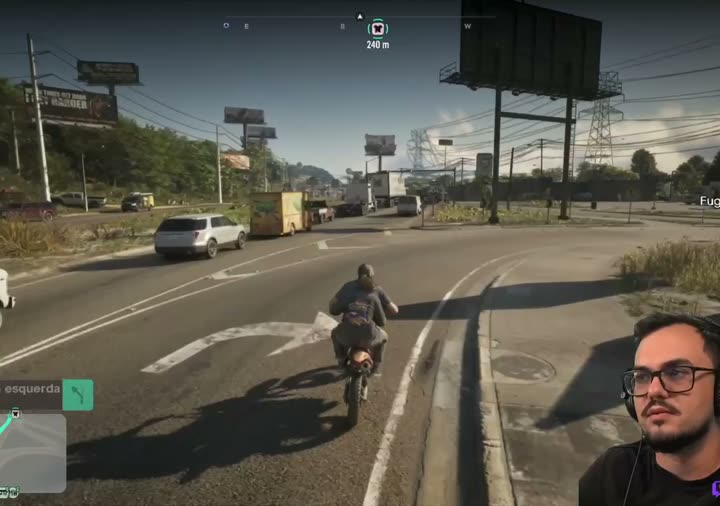
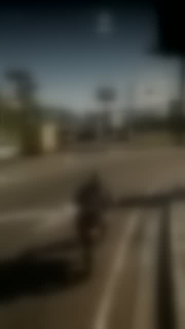

01A live entra
Cole o link do canal, da Twitch ou do YouTube. Ou deixe o radar achar streamers de GTA pequenos e médios, onde quase ninguém corta.
Para quem quer postar cortes de GTA 6 todo dia sem editar
O Clipador assiste às lives por você e entrega os cortes prontos.
162.665.999 views e US$ 16.665,68 no canal Boring History, de vídeo curto postado todo dia, pelo painel do YouTube, de 10/08 a 06/09/2026
Você cola o link do canal, da Twitch ou do YouTube. O Clipador assiste à live, acha os momentos em que o chat explode, corta em vertical e põe legenda, título e o crédito do streamer. Você só aprova.
R$ 47,90 até 30/11Pagamento único7 dias de garantia
Oito etapas, sempre na mesma ordem. Role e veja um momento da live virar corte.

AO VIVO@mrfalll · GTA 6
9:16 Corte pronto
Corte pronto654 cortes prontos em 37 horas
25 sAprovou, sobe sozinho para o YouTube Shorts.
Cole o link do canal, da Twitch ou do YouTube. Ou deixe o radar achar streamers de GTA pequenos e médios, onde quase ninguém corta.
Ela acompanha a live, lê o chat e ouve o som. Quando o chat explode ou alguém grita, ela marca o momento.
Cada momento ganha um veredito: poste, talvez ou descarte, com o motivo em português claro. Cópias do mesmo momento viram uma só.
Começa 5 segundos antes do pico e vai até 18 segundos depois, para pegar a reação inteira.
Sai em 1080×1920, o tamanho do celular, com o jogo inteiro no meio e o fundo desfocado.
Ela ouve a fala e escreve a legenda grande, cria o título e põe o selo com o @ do streamer.
Não sai um corte por noite. No Mac em que ele foi testado, foram 654 cortes prontos em 37 horas, esperando no painel.
Você assiste e aprova. Sobe sozinho para o YouTube Shorts; para Reels e TikTok, o vídeo e o texto já vêm prontos. Segure o botão verde para ver.
Agora mesmo tem live de GTA rolando. Cada momento que ninguém corta é um corte que você podia postar.
R$ 47,90 até 30/11Pagamento único7 dias de garantia
Tirados dos painéis do YouTube e do TikTok, e do próprio Clipador.
Os prints são resultados reais de contas que postam vídeo curto todo dia. Os números do Clipador são do banco da própria ferramenta, no Mac em que ela foi testada. Cada canal tem seu tema e seu ritmo: os números variam de pessoa para pessoa e não são promessa de ganho.
Canal que cresce é canal que posta todo dia. O Clipador faz a parte que cansa.
R$ 47,90 até 30/11Pagamento único7 dias de garantia
Todo jogo grande tem um começo em que todo mundo procura vídeo dele e pouca gente posta corte bom todo dia. Quem chega cedo pega o alcance.
Enquanto isso, a maioria está:
Canal de corte cresce com volume e constância. Na mão, cada live vira horas de trabalho. Com o Clipador, vira uma fila de cortes para você aprovar.
| Cortando na mão | Com o Clipador |
|---|---|
| Assiste à live inteira para achar o momento | Lê o chat e ouve o som: marca o pico sozinho |
| Legenda digitada palavra por palavra | Legenda grande escrita sozinha, ouvindo a fala |
| Um corte por noite, quando dá tempo | Vários cortes por live, enfileirados no painel |
| Corta tiro do jogo achando que é reação | Veredito poste, talvez ou descarte, com o motivo |
| Esquece o crédito do streamer | Selo com o @ e o link do streamer em todo corte |
| Só acha os streamers grandes | O radar acha os pequenos e médios, onde quase ninguém corta |
| Exporta, baixa e sobe em cada rede | Aprovou, sobe no Shorts; o resto vem com o texto pronto |
Você não precisa assistir à live. Precisa só aprovar o corte.
R$ 47,90 até 30/11Pagamento único7 dias de garantia
Eu queria um canal de cortes de GTA 6 postando todo dia, sem passar a noite assistindo live para achar 20 segundos bons.
Então montei uma máquina que assiste por mim. Ela lê o chat, ouve o som, escolhe o momento, corta, põe a legenda e o crédito do streamer, e deixa tudo esperando no painel.
Hoje eu abro o painel, assisto e aprovo. É essa mesma máquina que você leva.
É para você
Não é para você
Não é curso para você montar sozinho. É a máquina funcionando, do jeito que eu uso, com o passo a passo em vídeo para instalar.
1 máquina · 5 abas no painel · 5 módulos · suporte no WhatsApp
Atualizações incluídas. Pagou uma vez, recebe as novas versões.
Ele trabalha no seu Mac, não na nuvem de ninguém. Confira em 10 segundos antes de comprar.
Toque nos itens que você tem.
Faltam 4 itens
Marque o que você já tem.
Quero o ClipadorInstale, deixe o Clipador vigiar umas lives e veja os cortes chegando. Se não for para você, peça o reembolso em até 7 dias e recebe 100% do valor de volta.
Preço de lançamento até 30/11
O mês de lançamento já está passando.
Pagamento único · Pix, cartão ou boleto
Quero o Clipador7 dias de garantiaSem mensalidade
Entendo. Está tudo aqui, em um lugar só.
Não. O Clipador escolhe o momento, corta, põe legenda, título e crédito. Você só assiste e aprova.
Vem pronto para GTA. Para cortar outro jogo ou outro tipo de live, é um ajuste no arquivo de configuração, e o Claude faz para você.
Corte de quem permite e sempre com crédito. O Clipador já põe o @ e o link do streamer em todo corte. Muito streamer pequeno gosta, porque é divulgação de graça para ele.
Nada vai ao ar sem você aprovar. Aprovou, sobe para o YouTube Shorts, se você ligou a sua conta do Google (o Google pode deixar os primeiros envios privados até revisar). Para Reels e TikTok, você baixa o vídeo e copia o texto, que já vêm prontos.
Os cortes têm de 20 a 40 segundos. No TikTok, só entra na monetização vídeo com 61 segundos ou mais, então lá eles servem para crescer o perfil.
Para vigiar ao vivo, sim, e o Clipador mantém o Mac acordado. As lives que já acabaram ele corta depois, quando o Mac estiver ligado.
Não. O Clipador roda no Mac com chip da Apple (M1 ou mais novo). Pelo celular você compra agora e instala no Mac depois.
É o preço do mês de lançamento. Vale até 30/11.
Você tem 7 dias. Peça o dinheiro de volta e recebe tudo.
Não dá para prometer. Os números da página são reais, mas cada canal tem seu tema e seu ritmo, e só cresce quem posta com constância. O que o Clipador tira de você é a parte difícil: assistir, cortar e legendar todo dia.
Talvez você queira começar um canal de cortes. Talvez queira pegar o começo do GTA 6. Ou só parar de perder a noite assistindo live. Custa R$ 47,90 só até 30/11, a instalação termina com um corte de teste no painel, e você tem 7 dias para desistir.
R$ 47,90 até 30/11Pagamento único7 dias de garantia